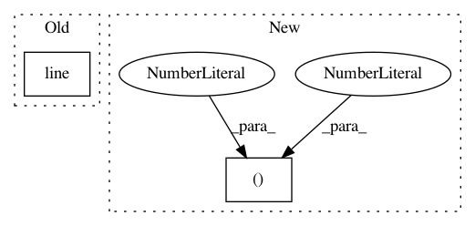

aac7b54c8d6957786a9aa70e896cef10fe0ab9fe,doc/examples/tracking_pft.py,,,#,39
Before Change
save_trk("pft_streamline.trk", streamlines, affine, shape)
renderer.clear()
renderer.add(actor.line(streamlines, cmap.line_colors(streamlines)))
window.record(renderer, out_path="pft_streamlines.png", size=(600, 600))
After Change
r = window.Renderer()
r.add(actor.line(streamlines, colormap.line_colors(streamlines)))
window.record(r, out_path="tractogram_probabilistic_cmc.png",
size=(800, 800))
if interactive:
window.show(r)
In pattern: SUPERPATTERN
Frequency: 3
Non-data size: 2
Instances
Project Name: nipy/dipy
Commit Name: aac7b54c8d6957786a9aa70e896cef10fe0ab9fe
Time: 2019-07-21
Author: girard.gabriel@gmail.com
File Name: doc/examples/tracking_pft.py
Class Name:
Method Name:
Project Name: nipy/dipy
Commit Name: c2cfaf314a381e520883eba2d965cd93fd5572e0
Time: 2019-07-21
Author: girard.gabriel@gmail.com
File Name: doc/examples/tracking_bootstrap_peaks.py
Class Name:
Method Name:
Project Name: nipy/dipy
Commit Name: 1ca2e48fb73bbb3188016052339cc1eeaaae756e
Time: 2015-05-11
Author: garyfallidis@gmail.com
File Name: dipy/viz/tests/test_fvtk_widgets.py
Class Name:
Method Name: test_text_widget